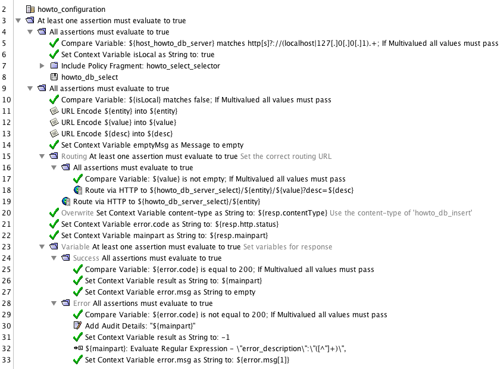

The gateway supports assertions that enable a policy developer to use JDBC/ Cassandra connections to access a database system. This is pretty straightforward. Nevertheless a naive implementation will end in policies that are difficult to maintain and difficult to extend. If a complex service API has to be implemented it is even more important to have a clean design.
This how to guide explains a pattern that will support policies that:
At the end the policy logic of the encapsulated assertions will support a setup where a gateway is taking on one of these roles:
If you are now thinking: 'Ok, so what is so special about it?' Here is the answer. If a serious customer does not want to run a database in the DMZ he can use a combination of the roles and combine them. The policy will support the setup below by switching just one variable from 'database is at SSG I' to 'database is running at SSG II':
SSG I and SSG II will authenticate each other using mutual ssl or any other appropriate scheme. The database can be accessed without any danger of having data exposed to unauthorized parties.
An extension is the ability to include monitoring/ management tools that use the same data API:
The overall goal is to have encapsulated assertions that provide easy access to a data source. Policy developers do not need to be aware of databases or server locations whatsoever. They just have to provide the values that should be inserted or updated or deleted or selected. The image below shows a service policy that is using the encas for select, insert, update and delete:
The implementation will consist of 6 API endpoints (service, data, test) and 11 policies (9 as encapsulated assertions):
The folder structure should be 'intuitive' which means, someone who did not develop the policies should have an idea of what is found where. We will create 9 folders (excluding the main folder):
Lets begin having fun!
Tip: The policy for this tutorial can be found at the bottom of this tutorial
We will start with creating a database.
The database will be called dbhowto, the table will be called howto. I know, not very fancy.
Here are the steps to create the database (for MySQL). The commands have to be executed in the terminal:
In the mysql console:
CREATE DATABASE dbhowto;
GRANT SELECT,INSERT,UPDATE,DELETE on dbhowto.* to howtouser@'localhost' identified by 'password';
FLUSH PRIVILEGES;
use dbhowto;
CREATE TABLE howto (
pk_howto VARCHAR(64) PRIMARY KEY COMMENT 'the primary key',
howto_topic VARCHAR(128) UNIQUE NOT NULL COMMENT 'the topic of the howto guide',
howto_author VARCHAR(128) NOT NULL COMMENT 'the author of this topic',
howto_updated BIGINT NOT NULL COMMENT 'updated a timestamp in seconds',
howto_desc VARCHAR(256) NULL COMMENT 'an optional description'
);
That's it. We will maintain data via policy execution later.
To complete the database task we have to create a JDBC connection in the policy manager. The details look like this if the database is running locally on the gateway:
The password has to match the value that was used in the 'GRANT' statement of the SQL script above (...identified by 'password', so it actually is 'password'). Do not forget to hit the "Test" button once the configuration is complete.
We will implement 4 encapsulated assertions. One encapsulated assertion per operation, 'insert,select,update,delete'. Ideally per database table. In this guide we will only use one table since the pattern will be the same for multiple or just a single table. When creating a fragment per table try to use the table name as part of the fragment name.
| operation | fragment | encas | task |
|---|---|---|---|
| insert | howto_db_insert | howto_db_insert | insert data into the table 'howto' |
| select | howto_db_select | howto_db_select | select data of the table 'howto' |
| update | howto_db_update | howto_db_update | update data of the table 'howto' |
| delete | howto_db_delete | howto_db_delete | delete data of the table 'howto' |
The implementation will support one insert statement. The fragment will use 3 input variables:
The other 2 values, the primary key and the updated timestamp, will be generated within the policy. For pk_howto the policy will generate a UUID. For updated the policy will take the current date-time in seconds. The policy looks like this:
The policy is built like this:
You may ask where the variable 'desc' is being set. Since this fragment will later be used as an encapsulated assertion it is up to that encapsulated assertion to define and set that variable. The actual insert statement looks like this:
INSERT INTO howto (pk_howto, howto_author, howto_topic, howto_desc, howto_updated) VALUES (${pk_howto[0]},${author},${topic}, ${desc}, ${now.seconds})
The implementation will support 6 different select statements. Always depending on the provided parameters. These are the possible queries. We will also associate each query with a 'selector':
The 'selector' is important to prevent execution of a branch by accident. It also speeds up policy execution because the correct branch will be selected by checking one variable.
Whenever a 'like' should be supported it has to be decided if a '%' should be usable on its own or not. I like to have at least 3 characters preceding it but that is up to you. If you follow my thought the value of the parameter has to be checked accordingly!
In order to create the policy we have to create branches that will execute the correct branch. The branches have to be ordered in a way that the most common (or possibly most common) branch will be processed first. In this howto guide I am assuming that users will most likely search for topics most of the times.
The policy looks like this:
The policy is built like this:
The JDBC assertions are configured as shown below (example shows the one using 'topic' as where clause:
The value for 'The maximum .... returned by the query' must have a reasonable value for your use case! In order to process the result it is usually good to return a result as an XML structure. And we also do not want to fail if no records were returned. That simply indicates an empty result.
Check 'Save Results to Context Variables' only if you have a use for them. In this tutorial we do not use them so that list could be empty. It is just shown as an example.
Since we have designed the expected response for queries further down (see API Design) we have to run a XSL stylesheet to create it. The stylesheet will transform the default XML JDBC assertion result into our expected result and looks like this:
<xsl:stylesheet version="1.0" xmlns:L7j="http://ns.l7tech.com/2012/08/jdbc-query-result" xmlns:xsl="http://www.w3.org/1999/XSL/Transform">
<xsl:output cdata-section-elements="id author topic desc updated" method="xml" omit-xml-declaration="yes"/>
<xsl:template match="/L7j:jdbcQueryResult">
<xsl:element name="values">
<xsl:attribute name="count"><xsl:value-of select="count(L7j:row)"/></xsl:attribute>
<xsl:for-each select="L7j:row">
<xsl:element name="value">
<xsl:element name="id"><xsl:value-of select="L7j:col[@name='pk_howto']"/></xsl:element>
<xsl:element name="author"><xsl:value-of select="L7j:col[@name='howto_author']"/></xsl:element>
<xsl:element name="topic"><xsl:value-of select="L7j:col[@name='howto_topic']"/></xsl:element>
<xsl:element name="desc"><xsl:value-of select="L7j:col[@name='howto_desc']"/></xsl:element>
<xsl:element name="updated"><xsl:value-of select="L7j:col[@name='howto_updated']"/></xsl:element>
</xsl:element>
</xsl:for-each>
</xsl:element>
</xsl:template>
</xsl:stylesheet>
All values will be created within a CDATA section. The XSLResponse assertion is configured to use 'resp' as input variable.
We now have to define result variables. In order to keep the fragment easy extensible we will not return single variables but a message response. And a content type, and a status.
Here is what has been useful in development so far (each variable set as type 'String'):
IMPORTANT: the value of the variable content-type has to match the selected result value in the 'Set Variable Assertion' on line 46!

The implementation will support 4 different update statements. The fragment will use 4 input variables:
The policy is built like this:
The policy has these main sections:
IMPORTANT: Line 63, the 'id' of the updated dataset is set as result!
In comparison to the fragment 'howto_db_select' this fragment is setting the selector in a specific section. 'howto_b_select' gets the selector passed in as value. The way to do this depends on the overall logic of the policies. It it is possible do this in the fragment itself!
The implementation will support 1 delete statements. Values can only be deleted by a given 'id'
The policy looks like this:
There is not a lot going on. Therefore no further description.
That's it for all fragments that are communicating with the database. All other policies will connect to the database through these fragments. Therefore they are the central point for any modifications on the 'database level'. The next step is to built encapsulated assertions around them.
The encapsulated assertions that are based on the fragments that we have built above will be specified with input variables but without labels. They will be used at APIs and also within 'delegator' encapsulated assertions later. Here is the 'insert' encapsulated assertion:
Here a few notes that should be kept in mind:
Note: 'Input' must refer to variables that are used with the same name in the fragment. 'Outputs' must match names of variables that are set in the fragment!
The other encapsulated assertions for select, update, delete look just the same with appropriate inputs and outputs.
As this tutorial is all about building policies that will make it easy to configure one or more gateways to act in different roles we will now look at one of the most important pieces. Encapsulated assertions that will either use an encapsulated assertion that accesses the database or to use a data API. The logic will be implemented as shown below:
SSG I includes the delegate encapsulated assertions. These are configured to either use a local storage encapsulated assertion or to sent a request to the data API hosted on a different gateway.
Accessing the local storage is easy: take the incoming values and pass them to the encapsulated assertion. Calling the data API is slightly more complex:
We will go though an example to explain the details and the pitfalls. As of here I will not separate the process of building a fragment and encapsulated assertion. They belong together and by now everyone is an expert anyways :-)
The first step is to create an encapsulated assertion (which includes a fragment and an encapsulated assertion definition) that holds the configuration that enables a delegate encapsulated assertion to distinguish between 'local' and 'data API'.
We will name this encapsulated assertion howto_configuration which will be located in the 'configuration' folder of our folder structure. The screenshot below shows the policy and the configured input and output parameters of the encapsulated assertion:
As an example we will discuss the delegate named 'howto_select'. Can you see it? What? The name! 'howto_select'! Remember, we have created an encapsulated assertion named 'howto_db_select'. I usually recommend to used similiar names if the encapsulated assertions are somehow related to each other.
Here is the specified interface:
Again, look at the single bits and pieces:
Here is the policy:
Now, this policy has a lot going on. Let's start at the top:
If the data API server is not located at localhost some more stuff has to happen:
The other delegates will follow the same pattern.
This is the toughest part. How should the API look like that is exposed to clients as service API and as data API? Since this tutorial is more about the data API we will spent time on that. Not so much on the service API.
The API will have to handle all operations. Select, update, insert, delete. We will implement a REST-isch API and for that we will map the database operations to HTTP methods GET, POST, PUT and DELETE. I am not the worlds best REST expert so you will have to excuse if the following is not perfect. It should at least give you an idea how you could approach this task.
INFO: For the pattern '/api/...' this tutorial uses '/howto/datastore/v1' for the data API and 'howto/service' for the service API.
The supported pattern looks like this:
POST /api/{entity} where 'entity' can be one of the following: all
The content-type has to be application/x-www-form-urlencoded.
The message content can be one of these (reflecting our 'NULL/ NOT NULL' database definition):
IMPORTANT: Values for 'pk_howto' and 'updated' will created in policy!
Since this API will generate a primary key (id) on the fly it is unkonwn by the client. For that reason this API will always have to return a URL that can be used to retrieve the persisted data! The response will look something like this:
https://server/api/id/xyz where id is the entity and xyz is the generated id.
The supported pattern looks like this:
GET /api/{entity}/{value}?{filter} where 'entity' can be one of the following:
id, author, topic, desc(ription), all
Supported filter: desc=value
These are the supported combinations:
Ok, great. But wait. What is returned? In general I am a big fan of XML. XML can easily be transformed into anything. For that reason this tutorial implements XML responses. The message format will be this:
Here is an example. value represents a single row to be returned. Multiple rows could be returned:
<values count="2">
<value>
<id><![CDATA[column_data]]></id>
<author><![CDATA[column_data]]></author>
<topic><![CDATA[column_data]]></topic>
<desc><![CDATA[column_data]]></desc>
<update><![CDATA[column_data]]></update>
</value>
<value>
<id><![CDATA[column_data]]></id>
<author><![CDATA[column_data]]></author>
<topic><![CDATA[column_data]]></topic>
<desc><![CDATA[column_data]]></desc>
<update><![CDATA[column_data]]></update>
</value>
...
</values>
An empty result looks like this:
<values count="0"/>
The attribute count is a little goody for clients that help them to create logic based on the number of values.
A namespace is not defined. That is more or less up to the concrete implementation if a namespace is required or not.
The supported pattern looks like this:
PUT /api/{entity}/{value} where 'entity' can be one of the following: id
value must be the id of the dataset that is updated.
The content-type has to be application/x-www-form-urlencoded.
The message content can be one of these:
The response will look something like this, the URL pointing to the modified dataset:
https://server/api/id/xyz where id is the entity and xyz is the id.
The supported pattern looks like this:
DELETE /api/{entity}/{value} where 'entity' can be one of the following: id
The response will be plain text containing the message deleted
For simplicity the service API will support the same interface as this data API!
The URL for the data API will be this: /howto/datastore/v1/*
The policy for the data API looks like this:
IMPORTANT: Require SSL ALWAYS! Require some kind of authentication ALWAYS!!!
As for a few special cases the response assertions may not just return the result of the encapsulated assertion. The POST branch for example has to return the URL that enables a client to access the persisted dataset. It look like this (line 51):
The Customize Error Response assertion was also configured with many variables:
So, we are almost done. We will now implement a very simple service that is not providing anything cool other than showing how our delegate encapsulated assertions are used. Have a look at the policy:
IMPORTANT: Any request validation (replay attack protection, parameter validation, ...) has to be implemented before line 8!
Requests to this API can be executed with the same URL-path and query parameters as our data API. Our base URL is slightly different though:
Service API: /howto/service/* instead of /howto/datastore/v1/*
The main difference of course is that we are using the delegate encapsulated assertion but not the datastorage access encapsulated assertion. The nice thing here is that the policy developer can now use the delegators and does not need to worry about:
The interface is simple, like this one:

The policy developer also does not even need to know which database system is used. Or if there is a database at all!
If the intention is to built a policy that can be installed using the policy installer framework there are a few remarks you have to keep in mind:
An example that implements all of these remarks is the 'OAuth Toolkit' installer. If you open the policy manager and look for 'Tasks -> Additional Actions -> Install OAuth Toolkit' you will find a screen like this one:
Users can select any bundle (e.g.: Internal, Browser based test clients) and that bundle will be installed. If the user wants to install a second set of the same policies he can select it again but configures a 'Version Modifier', e.g.: v1.1.
Imagine you develop a service on the URL path '/this/is/my/service'. When this is installed, would it not be nice if it could be installed
as '/v1.0/this/is/my/service'? And after you improved your service install the new version as '/v1.5/this/is/my/service'.
And would it not be even better if all referenced objects like encapsulated assertions would also include that version?
I know, yes it would be nice! And yes, it already works.
Making it work requires you to follow a naming convention for variables. Here is an example:
What will happen (with some example code in the actual installer implementation) is this:
Please take the provided policies of this tutorial and have a look at 'howto_configuration'. Also look how its variable is used in routing assertions in the delegate encapsulated assertion.
After all these policies being implemented you certainly need to know if they work. For that you can create testing APIs that will test each single piece of your work.
NOTE: Before running tests on the provided policies make sure to implement the authentication section at the datastore endpoint!
NOTE: The provided example policies are configured to use 'admin/password' in the delegate encapsulated assertions for connecting to the data API!
You can now create an API for testing purposes. This API would set the required input variables for any encapsulated assertion and could verify output variables. To give you an idea, it could look like this:
You can complete this policy with all kinds of cases and look at it as JUnit test for your encapsulated assertions.
If you have verified that your encapsulated assertion work it is also simple to go and test your data API. As I showed above you can certainly also test any API. A test policy can look something like this:
Once the encapsulated assertion and the data API got verified it is time to test the delegates. Implement the same logic:
Using local storage and (simulated) data API server:
The good news is that you do not have to care when implementing your tests for the delegates.
By switching your configuration from 'localhost' to 'your-real-hostname' will switch from local to data API and you will know if both cases work.
Switch host_howto_db_server from https://localhost:8443 to https://your_hostname:8443
Turn on policy debugging, follow the audit log and you can see that your data API is used. If your tests are still successful the chances are high that you have working database access encapsulated assertion, delegators and data API.
It is now a simple step to go and test your service API. As I showed above for the data APIs you can certainly also test a service API. A test policy can look something like this:
Call your service API with all kinds of variations.
For anybody who wants to play around with this tutorial I have a good message: you can have it! These are the requirements and steps to get you going:
Note: the import of the tutorial will create all policies and the JDBC connection. No need to do that manually
You hopefully have seen how services can be implemented that can be implemented multiple times on the same gateway, how encapsulated assertions can be designed to communicate with local databases or via an API. And you have learned how tests can be implemented, for encapsulated assertions and for APIs.
Please send any comments to Sascha.